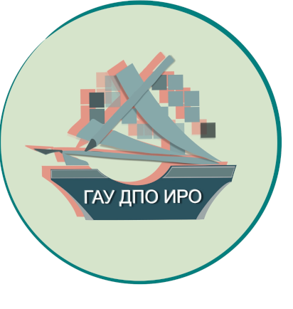
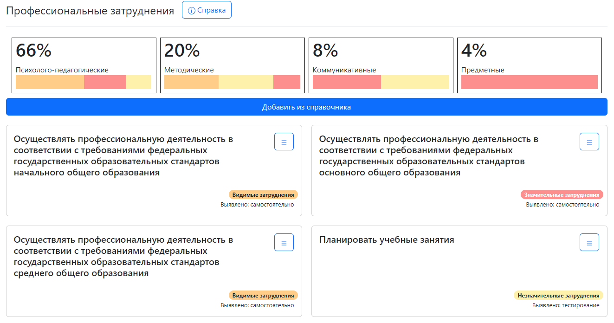
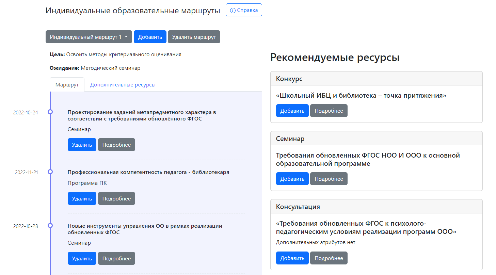
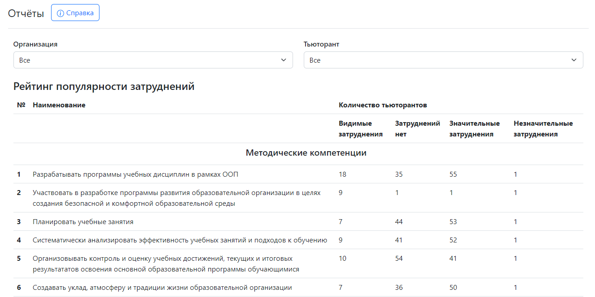

Выполнил: Скворцов Даниил
Группа: КСм-22-1
Облако - это способ реализации клиент-серверной архитектуры с использованием локальной, корпоративной или глобальной сети
Крайне обширна:
1. Совместная работа детей или педагогов (Moodle)
2. Обмен файлами (облачные хранилища)
3. Обучающие приложения (Quizlet)
и т.д.
Развитием компетенций педагогов среднего образования занимается ИРО
Автоматизация формирования ИОМ - индивидуальных образовательных маршрутов
До этого тьюторы вручную работали с каждым педагогом
Сейчас большая часть работы автоматизирована
Текущий результат: более 1900 пользователей
Определение проф. затруднений
Формирование ИОМ
Контроль компетенций педагогов методической службой
Обратная связь:
Telegram VK